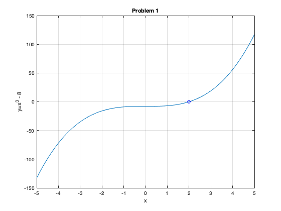

Contents
Homework 7
Juan Alejandro Ormaza October 19 2021 CS375
clear all; clc; close all; format long e
Problem 1
f_x=@(x) x.^3 - 8; d_f=@(x) 3*x.^2; x=linspace(-5,5,100); figure() plot(x,f_x(x)) hold on plot(2,0,'bo') title('Problem 1'); xlabel('x'); ylabel('y=x^3 - 8'); grid on fprintf("there is only one zero at x=2\n\n")
there is only one zero at x=2
Problem 2 and 3
TOL=10^(-10); x_bisection = my_bisection(f_x,1,4,TOL); x_newton = my_newton(f_x,d_f,4,TOL); x_secant = my_secant(f_x,1,4,TOL); fprintf("the root of the bisection method is %2.14f and it took %3.0f iterations\n\n",x_bisection(end),length(x_bisection)); fprintf("the root of Newton's method is %2.14f and it took %3.0f iterations\n\n",x_newton(end),length(x_newton)); fprintf("the root of the Secant method is %2.14f and it took %3.0f iterations\n\n",x_secant(end),length(x_secant));
the root of the bisection method is 2.00000000002910 and it took 35 iterations the root of Newton's method is 2.00000000000000 and it took 8 iterations the root of the Secant method is 2.00000000000000 and it took 11 iterations
Problem 4
ek_bisection = abs(x_bisection-2); ek_newton = abs(x_newton-2); ek_secant = abs(x_secant-2); ek1_bisection = circshift(ek_bisection,-1); ek1_newton = circshift(ek_newton,-1); ek1_secant = circshift(ek_secant,-1); bisection_conv = ek1_bisection./ek_bisection; bisection_conv(length(bisection_conv))=0; newton_conv = ek1_newton./(ek_newton.^2); %newton_conv(length(newton_conv))=0; secant_conv = ek1_secant./(ek_secant.^(1.62)); %secant_conv(length(secant_conv))=0; iter1=1:1:length(x_bisection); iter2=1:1:length(x_newton); iter3=1:1:length(x_secant); fprintf("Bisection method:\n") fprintf("iteration\t error\t\t convergence rate\n") fprintf("%3.0f \t %3.12f \t %3.12f\n",[iter1;ek_bisection;bisection_conv]) fprintf("\n") fprintf("\nNewton's method:\n") fprintf("iteration\t error\t\t convergence rate\n") fprintf("%3.0f \t %3.12f \t %3.12f\n",[iter2;ek_newton;newton_conv]) fprintf("\n") fprintf("\nSecant method:\n") fprintf("iteration\t error\t\t convergence rate\n") fprintf("%3.0f \t %3.12f \t %3.12f\n",[iter3;ek_secant;secant_conv]) fprintf("\n")
Bisection method: iteration error convergence rate 1 0.500000000000 0.500000000000 2 0.250000000000 0.500000000000 3 0.125000000000 0.500000000000 4 0.062500000000 0.500000000000 5 0.031250000000 0.500000000000 6 0.015625000000 0.500000000000 7 0.007812500000 0.500000000000 8 0.003906250000 0.500000000000 9 0.001953125000 0.500000000000 10 0.000976562500 0.500000000000 11 0.000488281250 0.500000000000 12 0.000244140625 0.500000000000 13 0.000122070312 0.500000000000 14 0.000061035156 0.500000000000 15 0.000030517578 0.500000000000 16 0.000015258789 0.500000000000 17 0.000007629395 0.500000000000 18 0.000003814697 0.500000000000 19 0.000001907349 0.500000000000 20 0.000000953674 0.500000000000 21 0.000000476837 0.500000000000 22 0.000000238419 0.500000000000 23 0.000000119209 0.500000000000 24 0.000000059605 0.500000000000 25 0.000000029802 0.500000000000 26 0.000000014901 0.500000000000 27 0.000000007451 0.500000000000 28 0.000000003725 0.500000000000 29 0.000000001863 0.500000000000 30 0.000000000931 0.500000000000 31 0.000000000466 0.500000000000 32 0.000000000233 0.500000000000 33 0.000000000116 0.500000000000 34 0.000000000058 0.500000000000 35 0.000000000029 0.000000000000 Newton's method: iteration error convergence rate 1 2.000000000000 0.208333333333 2 0.833333333333 0.318339100346 3 0.221068819685 0.435296037791 4 0.021273536809 0.493001916400 5 0.000223114608 0.499925636500 6 0.000000024886 0.717046602291 7 0.000000000000 0.000000000000 8 0.000000000000 Inf Secant method: iteration error convergence rate 1 1.000000000000 2.000000000000 2 2.000000000000 0.216890309240 3 0.666666666667 0.815994397306 4 0.423076923077 0.876387440260 5 0.217518135116 0.579055527207 6 0.048917344679 0.667701420151 7 0.005029353441 0.662748984007 8 0.000125256065 0.661541563095 9 0.000000315494 0.672011570641 10 0.000000000020 0.000000000000 11 0.000000000000 Inf
Problem 5
% BY HAND PROBLEM ATTACHED TO PDF